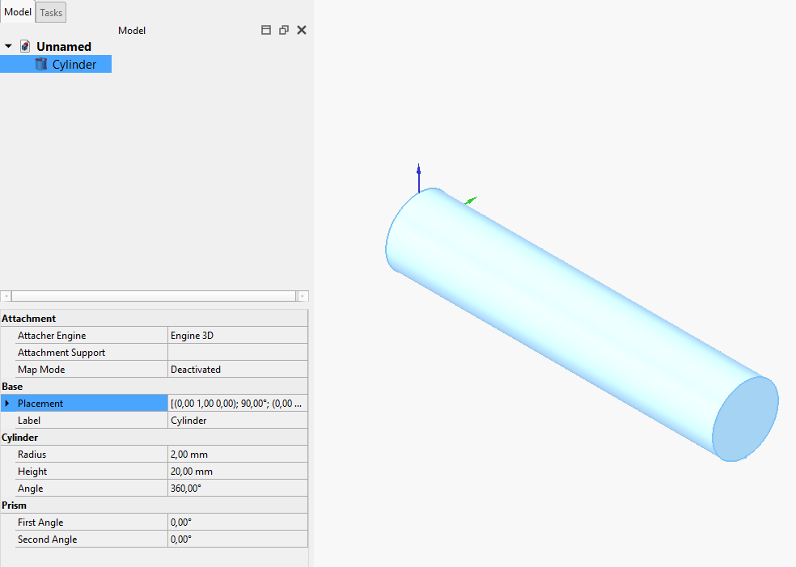
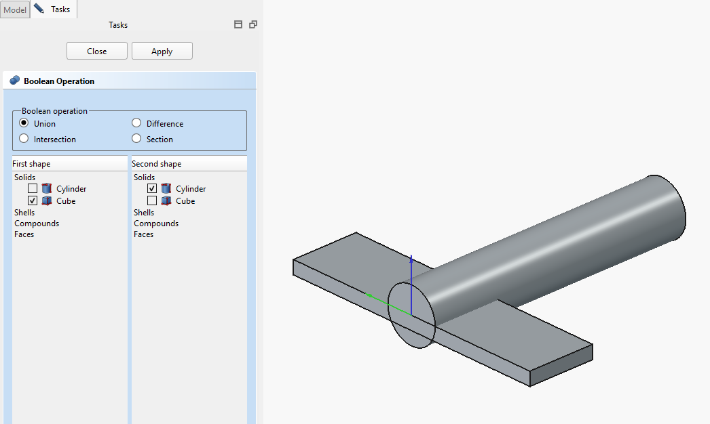

Aeroplane/cs
| Topic |
|---|
| Pracovní prostředí Part |
| Level |
| Začátečník |
| Time to complete |
| 10 minut |
| Authors |
| Hughthecat |
| FreeCAD version |
| Example files |
| See also |
| None |
První kroky
Budeme pracovat v  pracovním prostředí Part. Vyberte jej z nabídky Zobrazení → Pracovní prostředí → Part nebo pomocí voliče pracovních prostředí.
pracovním prostředí Part. Vyberte jej z nabídky Zobrazení → Pracovní prostředí → Part nebo pomocí voliče pracovních prostředí.
- Vytvořte nový prázdný dokument.
- Přepněte do
 izometrického pohledu.
izometrického pohledu. - Zapněte zobrazení
 osového kříže.
osového kříže. - Ujistěte se, že je zobrazeno Kombinované zobrazení.
- Vytvořte válec kliknutím na tlačítko
 Válec.
Válec. - Vyberte jej kliknutím na položku **Cylinder** ve stromu projektu.
- Klikněte na kartu **Data** ve spodní části stromu projektu nebo dvakrát klikněte na objekt **Cylinder** a na kartě **Úlohy** otevřete nastavení **Geometrické primitivy**.
Změňte hodnotu **Height** na **20 mm**. Hodnotu **Radius** ponechte **2 mm**. Potvrďte změny stisknutím klávesy **Enter** nebo kliknutím na **OK**.
Klikněte na položku Umístění (všimněte si malého symbolu +). Zobrazí se tlačítko se třemi tečkami .... Klikněte na něj. Stejného výsledku dosáhnete také volbou Upravit → Umístění. Zobrazí se panel úloh Umístění.
{kind=link}
Pokud ještě nejste obeznámeni se souřadnými osami X, Y a Z, vyzkoušejte si změnit hodnoty v části **Posunutí (Translation)** a sledujte, jak se objekt přesouvá. Až budete hotovi, klikněte na tlačítko Reset, které vrátí objekt do původní polohy.
Další kroky
{kind=link}

Nyní válec otočíme tak, aby ležel podél osy **X**. To provedeme jeho otočením kolem osy **Y**.
V části **Rotace (Rotation)** by měla být nastavena možnost **Osa rotace a úhel (Rotation axis and angle)**. Nastavte **Osa (Axis)** na **Y** a zvyšujte hodnotu **Úhel (Angle)**, dokud nedosáhne **90°**. Poté klikněte na OK.
V tomto okamžiku si rád pohled trochu pootočím (a dělám to často), takže to klidně udělejte také. Měli byste najít „šev“ válce na jeho spodní straně.
{kind=link}

Nyní přidáme a upravíme kvádr. Klikněte na tlačítko  Kvádr. Ve stromu projektu jej vyberte kliknutím na položku **Cube**. Nastavte hodnotu **Length** na **5 mm**, **Width** na **20 mm** a **Height** na **1 mm**.
Kvádr. Ve stromu projektu jej vyberte kliknutím na položku **Cube**. Nastavte hodnotu **Length** na **5 mm**, **Width** na **20 mm** a **Height** na **1 mm**.
Kliknutím na Umístění → ... otevřete panel **Úlohy**. V části **Posunutí (Translation)** nastavte hodnoty **Y = -10** a **Z = -1**. Poté klikněte na OK.
Nyní tyto dva objekty spojíme pomocí **booleovské operace**. Klikněte na tlačítko  Booleovská operace. V panelu **Úlohy** se zobrazí výběr typu booleovské operace.
Booleovská operace. V panelu **Úlohy** se zobrazí výběr typu booleovské operace.
Ujistěte se, že je vybrána operace **Sjednocení (Union)** a že jsou v obou seznamech tvarů jednou zaškrtnuty objekty **Cylinder** a **Cube**. Klikněte na Použít a poté na Zavřít. Nyní máte jediný objekt s názvem Fusion.
Přidejme ještě jednu desku pro dokončení modelu. Vytvořte desku, vyberte ji a změňte výšku na 5mm, délku na 3mm a šířku na 1mm. Změňte umístění Y: -0.5.
Teď potřebujeme sloučit Fusion s Box001, uděláme to rychlým způsobem. Kliknete na Fusion v okně projektu a se stisknutou klávesou CTRL kliknete na Box001. Tím vyberete současně obě části. Teď kliknete na tlačítko Sloučit a dostanete sloučený Fusion001.
{kind=link}
Nyní byste měli mít jednoduchý model letadla, Pravým kliknutím na Fusion001 je přejmenujete na 'Aeroplane'.

Myslím, že křídlo by mělo být posunuto dopředu, ale když vyberu Aeroplane a zkusim změnit umístění posunem X, posune se celý model. Ale já jsem chtěl posunout jenom křídlo, takže změnu umístění zruším.
Zvětšíme Aeroplane (kliknutím na [+] vedle něj) a zvětšíme Fusion.
Klikneme na Box a dostaneme jeho Umístění do Úloh. Všimněte si, že v poli posunů už má Y: -10 a Z: -1. Změňte posun X na 3 a klikněte na Použít. Už je to lepší. Klikněte na OK.
Otáčení
Klikněte na Aeroplane a dostanete jeho Umístění do Úloh (Další vysvětlení je v Umístění). V části Otáčení změňte výběr 'Otáčení os podle úhlu' na 'Eulerovy úhly', protože ty jsou pro práci mnohem snadnější.
-
Yaw je otáčení podle osy Z, tj. otáčení zleva doprava. (Úhel odchylky (yaw) je Psi ψ).
-
Pitch je otáčení podle osy Y, tj. předkem nahoru nebo dolu.
-
Roll je otáčení podle osy X, tj. křidlem nahoru nebo dolu.
{kind=link}
{kind=link}
{kind=link}
Nicméně, zde je potřeba mít na paměti několik důležitých věcí:
- Pozitivní otáčení je ve směru hodinových ručiček při pohledu z počátku směrem ven podle pozitivní osy. Nebo jinak řečeno: Pozitivní rotace je proti směru hodinových ručiček když se podíváte z pozitivní osy směrem k počátku.
- Ačkoliv tři označení jsou Yaw, Pitch a Roll není to přesně to co to znamená (česky nám to stejně může být jedno). Yaw, Pitch a Roll jsou reference vzhledem k souřadnicím soustavy objektu ve 3D prostoru. Správně by označení mělo být Heading, Elevation a Bank nebo přímo Azimuth, Inclination a Bank, protože ve skutečnosti odkazují na prostorové souřadnice ve 3D systému. Jsou to Tait-Bryanovy úhly. Chcete-li o tom více informací pak zkuste Eulerovy úhly.
- U Aeroplane v jeho aktuální pozici jsou použita jednoduchá pravidla. Yaw je rotace kolem osy Z, tj. doleva a doprava. Pitch je rotace kolem osy Y, tj. předkem nahoru a dolu. Roll je rotace kolem osy X, tj. křídlo nahoru a dolu. To je dostatečné pro začátek, ale později to nebude až tak pravda!
Pohrejme si se třemi čísly YPR (Yaw, Pitch, Roll). Stačí něco pouze změnit o pár stupňů abyste pochopili jak to funguje. Až skončíte, tak dejte Reset.
Nyní se podíváme proč označení Yaw-Pitch-Roll nejsou až tak moc vhodné. Změňte Roll na 90°. Yaw by mělo posunout předek letadla nahoru a dolu a Pitch by je mělo posunout ze strany na stranu "při pohledu zvenku letadla", což je kde jsme my. Funguje to tak? Ne, nefunguje! Pitch mění yaw a Yaw mění pitch. OK, Reset.
Takže lepší představa o otáčení je, že Yaw mění po délce, Pitch mění podle šířky a Roll mění směr (NSEW) kterým hledíte. Nebo byste se taky mohli podívat na Osové konvence pro další informace.
Dobrá a teď zpět do práce. Změňte Yaw na 45° a Pitch na -30°. Klikněte na OK pro zobrazení dokončené operace. Nyní se vraťte do Umístění úloh a podívejte se na pole Otáčení. Vrátilo se do 'Otáčení os podle úhlů' a má nějaká podivná čísla v polích os a úhlu. U mne měly osy: (0.219493,-0.529904,0.819161) a úhel: 53.65°. Ty tři čísla v závorce jsou komponenty XYZ jednotkového vektoru ve 3D prostou. Je to osa, kolem které bylo původní letadlo otáčeno do cílové pozice. A úhel říká o kolik bylo otočeno. Chytré, že, ale ne moc přehledné! Byl to Euler kdo předvedl, že můžete sérii XYZ rotací zkombinovat do jedné rotace kolem jedné osy.
Tady je ještě několik nápadů jak si můžete s letadlem pohrát:
- Změňte umístění Z (a Použít) potom změňte čísla YPR a podívejte se jaký to mělo efekt. Potom zkuste změnit umístění X a Y a otáčení.
- Změňte střed X (a Použít) potom změňte čísla YPR a podívejte se jaký to mělo efekt. Potom zkuste změnit středy Y a Z otáčení.
Doufám, že Vám tento výukový program pomohl orientovat se v otáčení objektů.
- Creation and modification: New Sketch, Extrude, Revolve, Mirror, Scale, Fillet, Chamfer, Face From Wires, Ruled Surface, Loft, Sweep, Section, Cross-Sections, 3D Offset, 2D Offset, Thickness, Project on Surface, Appearance per Face
- Boolean: Compound, Explode Compound, Compound Filter, Boolean Operation, Cut, Union, Intersection, Connect Shapes, Embed Shapes, Cutout Shape, Boolean Fragments, Slice Apart, Slice to Compound, Boolean XOR, Check Geometry, Defeaturing
- Other tools: Box Selection, Shape From Mesh, Points From Shape, Convert to Solid, Reverse Shapes, Simple Copy, Transformed Copy, Shape Element Copy, Refine Shape, Set Tolerance, Persistent Section Cut, Attachment
- Preferences: Preferences, Fine tuning
- Getting started
- Installation: Download, Windows, Linux, Mac, Additional components, Docker, AppImage, Ubuntu Snap
- Basics: About FreeCAD, Interface, Mouse navigation, Selection methods, Object name, Preferences, Workbenches, Document structure, Properties, Help FreeCAD, Donate
- Help: Tutorials, Video tutorials
- Workbenches: Std Base, Assembly, BIM, CAM, Draft, FEM, Inspection, Material, Mesh, OpenSCAD, Part, PartDesign, Points, Reverse Engineering, Robot, Sketcher, Spreadsheet, Surface, TechDraw, Test Framework
- Hubs: User hub, Power users hub, Developer hub